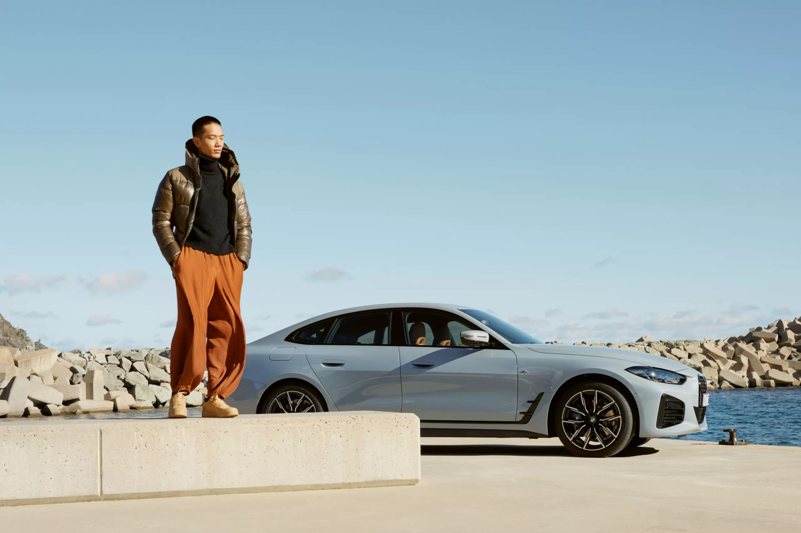
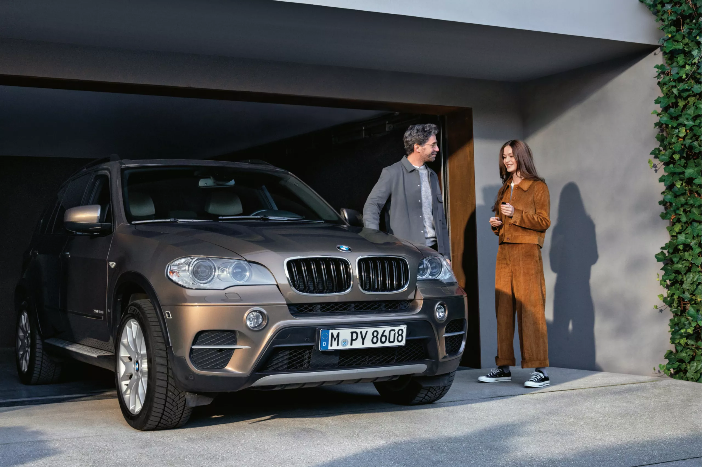
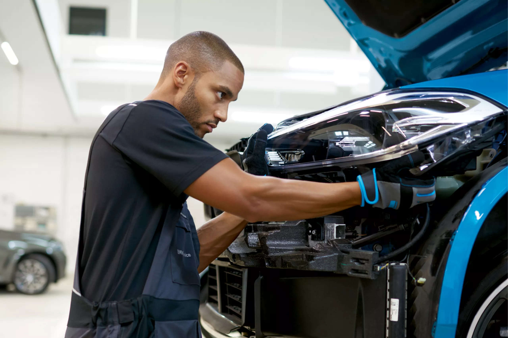
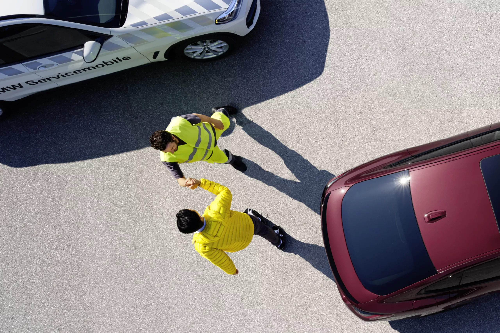

نتعامل مع مشكلاتك قبل وقوعها. تكتشف خدمة BMW Service مع نظام الرعاية الاستباقية أي حاجة للتصرف بشأنها، بدءاً من الصيانة أو التآكل وحتى المشكلات الفنية. وستحصل على الدعم المهني من خبرائنا بما يتماشى مع تفضيلاتك الشخصية. نضمن سلامتك أثناء القيادة على الطريق.
وبالنسبة لنا فأنت عميل مميز للغاية لأنك كل يوم تؤدي عملاً خاصاً للغاية. استمتع بامتيازات برنامج مبيعات سيارات البعثات الدبلوماسية من BMW واستفد من المزايا العديدة، بما في ذلك الشروط الخاصة والمزايا الضريبية كشخص دبلوماسي؛ الخدمة الشخصية لرعاية العملاء من شبكة موزعين المنتشرة في جميع أنحاء العالم.
اعرف المزيدالخدمات الشاملة BMW SERVICE INCLUSIVE.
ادفع مرة واحدة واستمتع بالقيادة مع راحة البال. تتيح لك الخدمات الشاملة BMW Service Inclusive تحديد المدة أو المسافة المقطوعة التي تختارها ودفع سعر ثابت مرة واحدة. وبعد ذلك، يتم تغطية جميع أعمال الخدمة المتضمنة. سيارتك BMW في أيد أمينة. لدى كل شركاء خدمة BMW Service المشاركين في جميع أنحاء العالم.

خدمة الحفاظ على القيمة BMW VALUE SERVICE.
هل عمر سيارتك BMW يزيد عن 5 سنوات؟ استفد من الأسعار التفضيلية وخدمات BMW الحصرية للاستمتاع بالسلامة والحفاظ على القيمة والشعور بالمتعة المطلقة أثناء القيادة. تشمل أسعارنا الجذابة استخدام قطع غيار BMW الأصلية للمكابح ومرشحات الوقود والمرشحات الدقيقة بالإضافة إلى الوقت الذي يقضيه خبراؤنا في العمل.

الضمان الممتد BMW EXTENDED WARRANTY.
حافظ على تغطية الضمان. مع الضمان الممتد من BMW، يمكنك تمديد الضمان القانوني الذي مدته عامين إلى مدة تتراوح بين 3 و5 أعوام أو قطع مسافة 200,000 كم. وخلال هذه المدة، ستستفيد من مجموعة شاملة من الخدمات، بما في ذلك الإصلاحات السريعة مع قطع غيار BMW الأصلية.
الخدمة المناسبة لكل موقف
نضع سلامتك أولاً عند إجراء الإصلاحات التجميلية أو تغيير الإطارات أو المساعدة على الطريق.

خدمات الإصلاح والرعاية من BMW
كل شيء بدءاً من الحوادث إلى الإصلاحات التجميلية: سيقوم خبراؤنا في مراكز إصلاح الهيكل والطلاء المعتمدة بإصلاح الضرر، بصرف النظر عن حجمه سواء كان كبيراً أو صغيراً. مصممة خصيصاً لسيارتك BMW.
اكتشف المزيد
خدمة العجلات المعدنية والإطارات
بدءاً من تركيب الإطارات وحتى ضبط ضغط الإطارات السليم. سيولي المتخصصون في خدمة BMW Service لدينا عناية بجميع جوانب تغيير الإطارات المطاطية أو العجلات المعدنية. مع تقديم أفضل عناية وأعظم قيمة مقابل المال.
اكتشف المزيد

برنامج المساعدة على الطريق
يتوفر برنامج المساعدة على الطريق المجاني لدينا BMW Roadside Assistance على مدار اليوم والساعة وطوال أيام السنة. كل ما عليك هو الاتصال بنا هاتفياً عبر تطبيق My BMW أو من السيارة مباشرة.
اكتشف المزيداستدعاء سيارات BMW
نقوم بعمليات مراقبة مستمرة لمستوى الجودة من أجل الحفاظ على سلامتك. إذا كانت سيارتك بحاجة إلى استدعاء، فستتحمل BMW تكلفة تنفيذ الخدمات الضرورية.
اكتشف المزيد